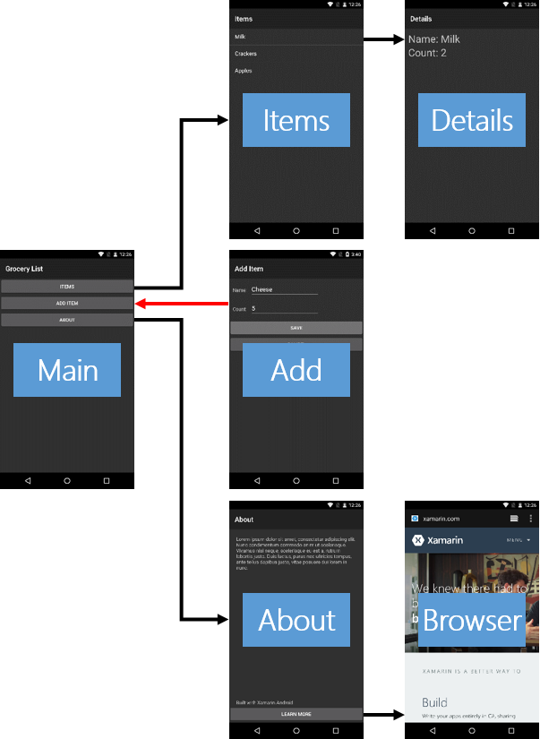

Exercise 3: Programmatically end an Activity
Duration
5 minutes
Goals
This lab shows you how to end an Activity programmatically. This is useful whenever you need to implement a "Save" or "Cancel" button in your UI. You will write code to end the Add Item Activity when the user clicks the "Cancel" button. The red line in the image below indicates the part of the app you will be working on here.
Challenge
Use the guidelines here to work through the exercise on your own. Alternatively, you can use the step-by-step instructions given below.
- Open AddItemActivity.cs.
- Add code to the
OnCancelClickmethod to end the Activity. - Run the app to test your work.
Steps
Below are the step-by-step instructions to implement the exercise.
Finish an Activity
- Open AddItemActivity.cs.
-
Locate the
OnCancelClickmethod. -
Inside
OnCancelClick, add a call to the Activity'sFinishmethod. The code is shown below, hidden behind a button. - Run the app to test your work. Navigate to the Add Item Activity. Click the "Cancel" button and verify you return to the Main Activity.
Summary
In this part, you wrote code to end an Activity. You won't need to do this very often since the Android Back-button is usually sufficient. However, if you want to provide an explicit "Cancel" or "Save" operation, knowing how to end an Activity programmatically will be useful.